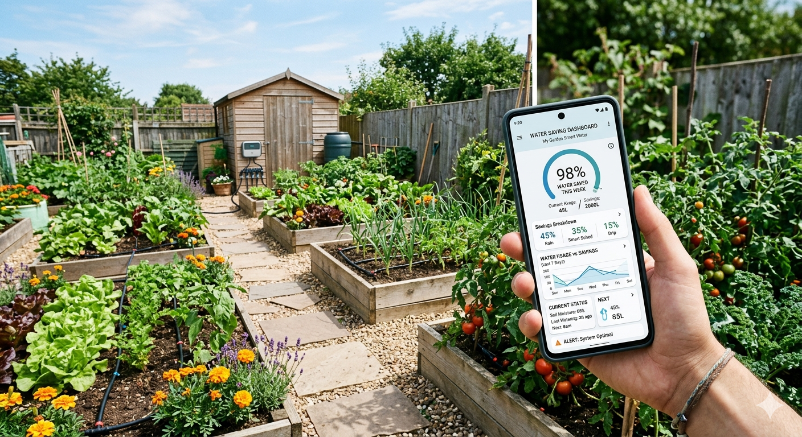

Hidratación inteligente para su paisaje
Aprovecha la tecnología agrícola de precisión para asegurar que su ecosistema
prospere mediante la automatización inteligente
el análisis de datos en tiempo real.



Nuestra tecnología principal sincroniza los datos del microclima local con el análisis del suelo en tiempo real. Se acabaron las conjeturas: solo hidratación optimizada científicamente.
Sincronización climática
Adapta los programas de riego según la humedad y el calor en tiempo real.
Análisis del suelo
Monitorea los niveles de tu pH y nutrientes en tiempo real.
Tres pilares del sistema diseñados para brindarle un control absoluto sobre tu jardin.

Monitorea los niveles de tu pH y nutrientes en tiempo real.

Adapta los programas de riego según la humedad y el calor en tiempo real.

Adapta los programas de riego según la humedad y el calor en tiempo real.